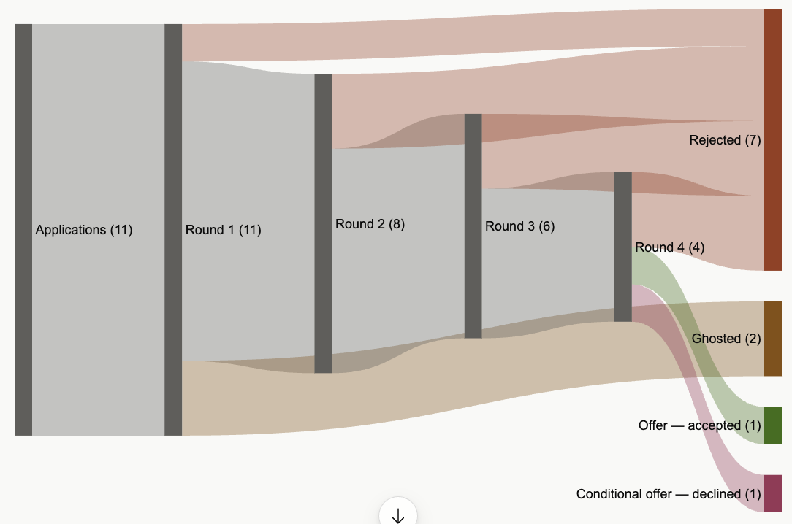
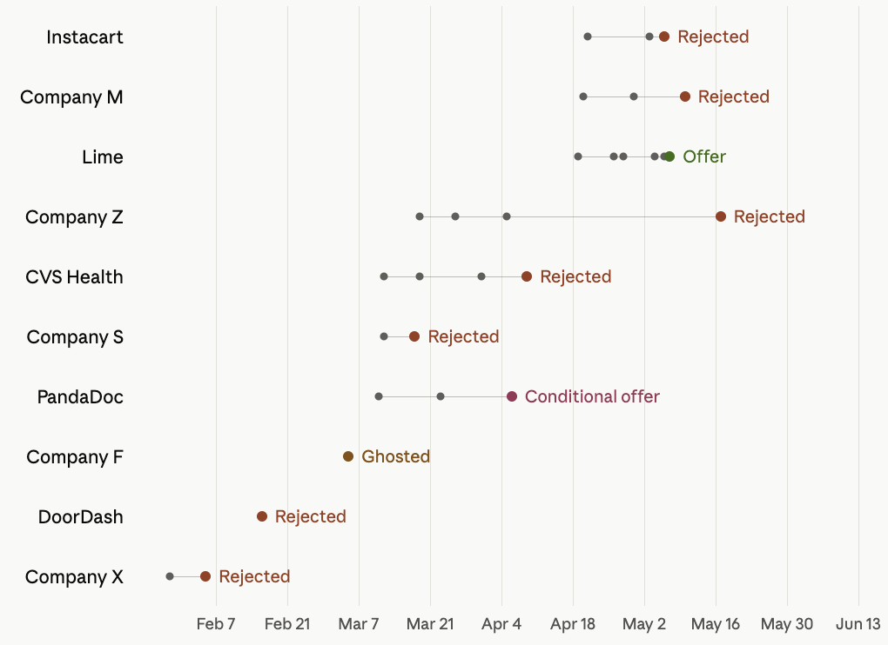

2026年跳槽记
今天是美国这边的独立日,也是我老公的生日。美国东海岸这两天高温预警,我看网上有消息好像说华盛顿和费城这边的独立日的游行也都临时取消了,因为天气太热了。我其实已经休假第二周了–我6月19号从上一份工作辞职,下周一（7月6号）开始我的新工作。过去这两周感觉过得还是很轻松的,毕竟不需要担心工作上的事情。休假第一周好像也没有干什么特别的事情,前几天就处理了一些待完成事项,周四（25号）去费城看了一场世界杯球赛–库拉索对阵科特迪瓦，那一周剩下的其他时间基本上就是在收拾收拾家里–自从搬家之后,还有一些当时打包的箱子还没有整理出来,所以就趁有时间把家里该收拾的收拾了一下,包括衣柜，抽屉及各个储物柜，收拾完感觉还是很神清气爽的。第二周也就是这周早些时候,我们一家三口和婆婆一起去马里兰这边的一个（海湾）小镇St. Michaels进行了一个短途旅行,这也是我女儿的第一次外出旅行以及第一次住酒店。我们总共就住了两晚，节奏很慢，基本上就是在那个小镇的镇中心散散步（其实天气也挺热的）,在酒店里的泳池里泡一泡,坐在泳池边休息休息,感觉还是挺放松的吧。不过这次旅行我最喜欢的部分应该是海鲜美食,小镇以海鲜为特产，所以我们从第一天到达那边就吃了海鲜,后面午饭和晚饭基本也都是吃了海鲜–我和老公甚至两天连续去了同一家当地有名的海鲜店吃晚饭。我们前天周四回来的，回家的感觉很好，出门在外旅游有时候也还是挺累的。昨天基本上就是在家休息，也是过得很愉快的一天–昨天早上我到院子里剪一些花回来插花，插了一个我觉得还可以的花束，中午我又做饭了（对，休假期间我也做了很多cooking，感觉过去两周做饭次数可能比之前一年做得都要多）。下午娃睡完午觉后我就让陪她在屋后的树下玩水玩了一阵子–给她的便携式戏水池放满水让她坐在里面玩，我就坐在旁边陪她，双脚也放到她的水池里，我们在玩水的时候娃爸在给她安装前阵子买的step 2的water table,安装完后娃就转移到water table玩水玩了好一会，我全程都坐在树下陪她，望着远处的高尔夫球场，树下偶尔夏风阵阵，甚是惬意；晚上吃完晚饭之后,本来是想去超市购物的，但是发现是佛得角对阿根廷的一场世界杯的球赛,我和娃爸就临时决定留在家里看球赛了,感觉也是挺正确的一个决定,因为比赛很激烈，佛得角的表现很好的。虽然他们最后以2比3的比分失败了,但是虽败犹荣；所以昨天真的是很开心很快乐的一天。
我一直想把今年跳槽的经历记录下来,但是一直没有时间,所以现在坐在这边,想慢慢开始记录一下今年跳槽的经历和感受。其实去年十月左右就开始有了想要跳槽的念头,但是因为已经临近年底,美国这边节假日也快到了,感觉可能也没有太多的机会,所以当时也没有怎么投简历，但是后来发现其实是错误的,因为组里有人在去年十二月份,以及今年年初一月离职跳槽了–他们应该是在去年下半年的时候面试,而且大概在节假日期间面试拿到了offer。我开始认真投简历找工作是在今年年初之后，当时让我特别想跳槽的一小部分因素就是去年年底接了一个项目做的比较沮丧，加上年初开始手上的其他项目又被各种各样的事情给block了,当时就特别想离开；其他还有想跳槽的因素就是我们组的同事都在费城周边，大家平时都会去办公室，我是组里为数不多remote的，当时觉得长远来看对我的职业发展也不是很有利,所以就认真的开始找工作了。今年其实市场真的很差,可能也不是跳槽的最佳时机–由于AI的冲击，很多的公司在不断地裁员,DS的岗位也不是很多。然后我自身的一些因素，包括对薪酬的要求（想要有所提高），以及地理位置的限制（在马里兰我家附近当地没有什么工作机会，北弗吉尼亚那边距离也有点远，DC和巴尔的摩机会也不多），可投的工作机会更是少之又少。不过现在回头看，感觉自己也很幸运，面了十个岗位左右，90%以上都是remote，最后也拿到了比较心仪的offer。
今年的第一个面试是在二月份，我是在一月底二月初的时候自己通过领英慢慢开始投简历–当时看到North Bethesda那边有个小的上市公司（公司X）在招人，我就主动联系了一下他们的recruiter,跟recruiter在领英交换了一些message之后就安排了一个视频‘面试’（说是面试，发现后面就是跟recruiter闲聊）。当时我投了那个公司两三个职位，有一个是product analytics方向的,还有两个建模相关的职位，收到第一个后续面试的是product analytics方向的那个职位，直接跟hiring manager面了–面试官是一个中国女生，面试主要就是分成了两部分,第一部分是SQL的一个live coding,没什么太大难度；后半部分印象当中好像就是聊了聊简历,问了一点关于实验设计方面的问题，因为确实没有太多的实验设计相关的经验，所以面的不是很好,面试官当时就直接跟我说,她找的这个人是希望能直接就上手做实验相关的一些项目的，可能感觉我的背景不是很符合,但是她会向其他跟我背景更符合的组推荐我。当时面完就感觉可能不一定有下文了，后面因为开始准备其他公司的面试，我就也没有再follow up,他们那边也一直没有下文。二月份面的第二个公司是DoorDash，这个机会是我前同事内推的。他们内推比较高效–内推第二个工作日就收到了面试邀请，当时应该因为内推省去了和recruiter的面试，直接邮件回答了一些screening questions，面试邀请是technical面试那一轮，包括live SQL coding和product case study，网上其实也有很多面经。当时没想到内推后会这么快就约面试，自己当时也没有太多的准备。因为我很看重这个机会,所以在约面试的时候也有在犹犹豫豫，想要多一点时间准备，但又担心月的太晚，反正后面reschedule了一次,最后正式面试是在收到面试邀请的两周之后（记得面试是在国内春节那一天）。当时认真准备了很久，尤其是product case studies这部分，还在一些网站上花重金找了模拟面试,但是最后也还是挂了,感觉还是因为太紧张了吧，毕竟很久没有面试了。公司X没后文没有太在意，因为他们要onsite，但我也还不会开车，感觉每天去Northern Bethesda上三天班不是很实际；但Doordash面挂了还挺难受的，因为毕竟准备了很久，还挂在了第一轮。
在二月中旬面完DoorDash之后,就很长一段时间没有收到任何的面试，因为在准备DoorDash面试的那两周基本就是全身心地投入准备,完全没有再投其他任何的简历。到二月下旬,我就又继续在领英上关注一些的机会,重新开始投简历，在二月底投了Lime的一个职位后在领英上联系了一个在职员工–主要就是想跟他connect一下,了解一下他们公司和团队,再自我介绍一下。我主动邀请他约了一个视频通话，当时通过他了解到我已经申请的岗位面试也已经快收尾了，果不其然呢,后面我也就很快收到了拒信。但当时他也告诉我说他们部门很快就会再开放一个职位，我就说到时候让他帮忙内推一下。所以后面三月初Lime果真又新开了一个职位，我也让那位现员工内推了并拿到了面试机会。进入三月之后，最开始也没有太多的面试，当时我女儿一岁生日临近,我也忙着准备了一下她的生日，然后女儿生日刚过完的那个下一周,就突然间冒出了好几个机会，都是领英上hiring manager或者recruiter联系我的（不知道是不是领英通过什么algorithm就突然把我的profile分享给更多的招聘官了）。当时收到了大概三四个公司的联系–CVS，Freddie Mac，一个小的fintech（公司Z，总共一百三十几个员工，data团队有三四十人）,还有一个小的独角兽startup（公司P），还有一两个contract机会，加上Lime，所以三月中旬以后就有五六个公司开始面试。
先说那个小的独角兽公司P吧，那个机会是hiring manager直接在LinkedIn上找我的,全司remote，然后看了一下职位描述,感觉挺感兴趣的,是marketing方向的一个staff data scientist。我感兴趣是因为是他们做的东西其实也挺有意思的,然后title也挺高的,怎么说也是一个提升吧。他们第一轮是跟联系我的hiring manager进行了一个面试吧,当时聊得挺愉快的,双方都觉得挺合适，所以很快就进行了下一轮,是跟他们的VP of Data进行了一个面试，主要就是聊了聊简历，问了一些behavioral question，跟VP这一轮当时感觉行为面试面得不是很好,本来以为都可能挂了,但是最后也还是收到了下一轮（也是最后一轮）的通知，他们下一轮面试是一个take-home的case study，然后presentation。他们的case study花费了我很长的时间,我甚至是休了几天的假,专心地做这个case study。他们给了一个snowflake的sandbox environment，里面分享了他们业务相关的一些数据（不是真实数据,但是直接与他们业务相关）用来做分析，case study由两部分分别考察了experimentation和建模,感觉挺难的吧,或者是挺耗时间的。他们是允许用AI的，但是expectation会相应更高。presentation我当时自我感觉还挺良好的，但最后他们还是觉得我可能不太符合他们对staff level的这样一个期许，所以没有给offer，他们那边给了很详尽的反馈，告诉我哪方面我做得很好,哪方面有一些不足,还明确说整个team都觉得我很适合他们这个岗位的senior level，如果一旦有senior level的职位放出来会立马联系我。当时收到结果还是有些失望，但我也是很感激他们给了很多的反馈，准备面试的过程也补了很多知识，帮助了我后面的面试，后来也没有太难过,可能觉得也不是一个特别合适的机会，他们team比较小,可能support也比较少；然后staff level感觉进去之后可能压力会很大。本来看到反馈说后面会联系我觉得是客套话，结果他们在六月份真的有再联系我，问我感不感兴趣他们的senior岗位，说因为已经面过了可以直接给offer，我当时已经接了offer准备入职，所以就婉拒了，不过还是很开心，最后也算是拿到了这个公司的offer？另外想提一下他们的recruiter真的很给力，公司创始人是乌克兰人，在欧洲有员工，recruiter也是乌克兰人，邮件沟通有时差，但是很responsive，还给了很多有用的面试建议，尤其是最后一轮case study的考察点，她提供了很详尽的建议，是根据前面面试者的反馈总结的建议，也给我提供了很大的帮助。
然后就是CVS了，当时其实对CVS他们这个职位不是特别的感兴趣,是一个Senior Data Scientist,因为title的话呢,是跟我当时的职位是平级,然后薪酬呢,涨得真的等于没有涨,就是也没有涨太多。所以就觉得也不值得跳吧。但是我还是继续了他们的面试,因为也算是一个攒面试经验的一个机会。他们的第一轮是一个Hackerrank test,考差了SQL coding和Python coding–SQL很简单，Python主要给了个数据考察end-to-end建模,不是很复杂,但是有很多Python里面建模相关的包需要熟悉。本来以为不会过,因为建模那一块卡着时间把coding写出来了有了记过，但是没来得及加任何的comment以及对结果的分析（也是考察点之一），所以就当时觉得可能挂了,但后来也过了。过了hackerrank的test才是跟recruiter进行一个screening,就问了一些很典型的问题，当时觉得recruiter有点心不在焉的，后来发现她没多久就离职了,我后面也跟其他recruiter对接。recruiter screen之后还有一轮live coding（当时觉得CVS面试过程还是挺冗长的），live coding是跟一个中国女生面的，面了一点SQL和Python,不是很难,都是一些数据处理相关的，但题量很多，不知道是不是要求candidate把所有题都解答出来，我没做完也过了。然后再下一轮是跟一个senior data scientist面technical。当时觉得CVS面试recruiter给的信息很少，前面面coding不知道要考察什么，technical轮也没有给什么方向，后面technical那一轮就是聊了一点对healthcare方面数据的理解，面了一个保险行业相关的case study,然后还问了一些对于AI的理解和应用，怎么去用AI实现他们实际工作中的一些任务。所有的这些问题都挺surprise的，因为recruiter没有提供任何方向,我记得那一周我也面了很多试，对CVS准备得可能也不够充分，最后就挂在了那一轮。当时还是觉得有点可惜,毕竟如果能拿到offer的话后面面试也有点底气。
再来就是那个小的fintech，公司Z。我面的这个职位是纯建模的远程岗,第一轮是跟找我的recruiter电话面试,他们的recruiter给人感觉还是挺technical的,recruiter那一轮就问了一些technical的问题,包括怎么清洗数据,怎么建模以及建模的一些细节。第二轮是跟hiring manager面,基本上就是聊了聊关于建模的一些经历，前两轮给结果很快，面完基本立马就约了下一轮。第三轮是跟一个中国女生面了一轮technical，考察了Python coding和ML的一些知识点–Python不是很典型的题，是用Python去实现类似one-hot encoding但是不让Python的default package；ML那一部分就是考察了对overfitting/underfitting的理解。当时觉得没有面得特别的好,所以也不是很确定会不会过，但过了三天之后通知过了可以约最后一轮，recruiter分享了最后一轮面试的所有细节，包括需要做建模分析的数据。当时recruiter告诉我还有一个低一个级别的岗位，问我感不感兴趣，当时他的意思不是要downlevel，就是纯信息分享（因为第一轮跟他聊我说目前不在乎薪酬高低），但我还是有点不详的预感，后面给我约最后一轮一拖再拖，拖到了一个月左右，到五月中旬才面最后一轮。最后一轮要面两天，6个sessions，当时我在面第一天的时候拿到了Lime的offer，比公司Z的薪酬高很多，我是准备接的，所以也就无心面试，本来想取消当天的面试，但感觉太晚了，就还是面了第一天的试，本来想面完第一天就跟他们说不面第二天的了，结果他们那边抢先一步，告知我第一天面试表现不及期待，所以第二天面试取消。当时也是有点惊讶，不过也没有很在乎，可能对方也不想浪费时间。那家公司recruiter人还是可以，主要分享了很多面试相关的信息和方向，对面试是很有帮助，除了最后通知挂了之后我想要跟他要反馈，他没有回复。虽然recruiter在约最后一轮的时候一直解释说是因为有的面试官休假，时间上不好安排，但后来想想我当时应该不是他们的top candidate。这个公司的面试经历也是一个很神奇的经历。
三月份除了这几个主要的公司在面试,其他还有几个contract的机会。最开始有contract联系我的,我还是会面,主要是想攒攒面试经验。但是当时有一个contract的机会第一轮是hackerrank test，做得我筋疲力尽–题是staffing company给的，题是一点代表性都没有，很难很偏，感觉staffing company为了筛人而往偏了出题,觉得没有太大意义,所以后面我不太浪费时间和精力,一些contract的机会就没有再面了。然后Freddie Mac这边呢,他们的recruiter联系的我,跟我进行了一个电话面试后说是准备约下一轮还问了我的availability，但一直没有给我面约面试，当时因为我没有太感兴趣（也有点远，需要onsite）,我还在忙着其他公司的面试，所以也没有follow up,后面感觉就被ghost了。
进入四月份之后,除了三月份那些公司的后续面试之外,还收到了加州那边一个小的AI公司（公司M）的联系，然后Instacart找人内推也拿到了面试机会。公司M创始人是中国人，base在湾区，在中国上海和北京都有分部,全公司90%中国人，我面的这个职位是他们在美国这边的第一个Data Scientist,会有很大的scope和responsibility，我其实是特别感兴趣的,虽然它只是一个小的startup,但员工背景都很厉害，感觉是挺有前景的一个公司。recruiter在领英上找我，但感觉在领英上交流的不是很顺畅（technical上的不顺畅，发消息和接受消息有点bug什么的），还好后面我还是主动follow up了一下，问了recruiter有没有看到我的消息（才发现是有技术故障），然后开始了面试。第一轮recruiter聊了一下,他当时好像又google meet出现故障什么的，好几分钟后才上线，上线后也就聊了几分钟介绍了下流程，也没什么问题，后面说hiring manager对我感兴趣就立马安排了两小时的technical interview（两轮）。虽然recruiter在我追问的情况下给了比较细节的面试方向，但感觉后来面试内容也有一点点出入。第一轮当时面了一点live SQL coding，Python考察了一点classification的建模，一个职场经验不是特别丰富的中国小男生面的，人挺好的。第二个面试官目测是有些工作经验的了，面了一个machine learning相关的一些case study，然后让我意外的是他又给了一个Python的一个live coding–简单的数据处理的考察，当时面试官后面家里有点急事，我写完coding他给了个赞，没面完就下线了，让我有问题通过recruiter可以传达，他会答复（后面他确实答复了我通过recruiter穿搭的问题）。这一轮面下来感觉还是比较顺畅，跟面试官聊的也都挺好的。当天就通知过了然后约下一轮跟hiring manager进行一个一小时的面试，邮件是说会面AI vibe coding+聊简历，但vibe coding也没有说具体会怎么样面。因为我当时也还没有很多vibe coding的经历,后来在面试的过程也是磕磕绊绊的,没有在预期的时间内完成他们的考察任务。所以最后面的也不是很好,也就挂在了那一轮（后来想想应该试着让recruiter分享一些更具体的面试方向）。当时还是挺难过的,因为我对这个职位还是很感兴趣的，不过后来也只能move on了。和其他公司相比，面试流程比较随意，但recruiter也还是比较负责。
Instcart当时是在领英上联系的一个中国人帮忙内推的，本来也没有抱太大希望（因为我前同事一个econ phd跟我提到过面他们没过）。他们跟DoorDash同样高效,内推推完之后立马就收到了recruiter的面试邀请。然后第一轮是跟recruiter面，很典型的recruiter面试，他分享了一些职位信息（我当时是先确定了组然后面试）,还有薪酬等等,然后也简单地了解了一下我的背景。当天就立马就约了下一轮technical interview,45分钟,主要是一个SQL的考察,然后还有就是一些简单的case study。DoorDash和Instacart这些公司，网上都有很多的面经,所以有方向，但也需要好好准备,因为前面也面了很多准备了很多,所以Instacart这边也没有准备得特别的久,就面了他们的technical interview，也很快就过了。本来过了之后应该是最后一轮on-site,但当时他们recruiter告诉我说,hiring manager有一些timeline上面conflict,想要先跟我聊一下。后来了解到是hiring manager当时在犹豫要不要录另外一个人,但是他对我还是很感兴趣,所以想先跟我聊一下。所以我当时下一轮就是很hiring manager面试了，面了marketing方向的一个case study，没有聊得很好,当时聊完就感觉可能应该要挂了。最后也挂在了那一轮,也没有在进行后面的面试。当时Instacart本来就也没有想到会拿到面试机会,然后跟hiring manager感觉气场也不是很合的感觉，所以后来挂了有遗憾但也没有特别失望。
四月份另外一个最主要的公司就是Lime,三月份通过内推申请了Lime的职位，本来是三月份就要开始面试的（已经约好了第一轮）,但后面recruiter联系说要reschedule，一直拖到了4月20号才面第一轮，后来得知是因为hiring manager休假去了。第一轮也是很典型的recruiter面试，第二轮SQL live coding,第三轮跟hiring manager面试，前几轮都面得也挺顺利的，跟hiring manager就是主要就是聊聊简历,考察了实验和ML建模以及一点行为问题，hiring manager对我印象很好,甚至直接在面试过程当中就说她觉得我很合适，反正当时觉得气场还比较合，我也很喜欢hiring manager。最后一轮是要有四个面试，一个是take home的一个case study的一个展示,一个跟staff data scientist进行的experimentation和建模的一些deep dive,还有两轮behavior是跟stakeholders面的。当时最后一轮本来是要分两天面,但是因为面试官时间上的一些冲突,最后面了三天，周二周四周五，整个面的还是挺累的，因为一整周都要担心这一轮面试。不过好在最后也拿到了offer。虽然等待过程也挺煎熬的,因为他们给消息给得也不是很快，我是在周五面完了所有的面试,隔了一周都没有收到消息,在下下周的周一才收到了offer。Lime是在今年跳槽初期就开始投的公司，当时是我心里最心仪的公司之一，最后也拿到了offer，并且报酬给的也高出了预期，我是在5月18号收到的口头offer，我当时果断就接受了offer并于5月20号签了正式offer。当时很神奇的是，在我面最后一轮时，Lime申请了上市，也是很巧合，收到offer时recruiter说那阵子招的新人统一在7月6号入职，后来感觉可能也是因为要上市的原因，想等上完市再让新员工入职。所以我是公司上完市的第一批新员工，想想也是很特别的一段经历。
所以在四月份、五月份,主要就是面了Lime和加州那个小的AI startup（公司M），另外还有那个小的fintech（公司Z）的最后一轮。整个前前后后我是从二月份开始面试,五月份结束,总共面了十个公司左右,最后只拿到了1个offer（包括公司P的话2个offer），很庆幸很感恩能在这个市场上拿到比较理想的offer。今年跳槽也感受到了市场上面试的一些变化，变化主要是围绕coding的考察，一个是SQL的live coding,有的公司不再让面试者去上手写SQL query,而是会让面试者去debug AI写的SQL,去实现一些任务。另外一个就是vibe coding，今年我面试只有一个公司面了vibe coding,但我感觉以后vibe coding应该会越来越流行。另外的一点感受就是,在跳槽期间同时面试很多公司的时候,约面试是一个很有挑战性的事情。需要平衡各个公司的面试时间,一方面想要有充分的准备,另一方面又不想拖得太晚；如果一下子都约到一起,又会感觉很大的压力,所以在约面试的时候,我感觉还是花了很多的时间去安排最合理的面试。
这次跳槽还要十分感谢老公的支持,因为在我跳槽期间,他承担了很多带娃的责任，也因为承担了更多带娃的责任，娃爸甚至减少了自己每周工作的时间（只拿75%的pay）。我每天依然负责娃的吃饭,洗澡和哄睡任务,其他陪玩的时间主要是老公。平时双休有时候老公会带娃出去购物,或者是带她出去玩,这样我可以自己在家专心地准备面试。我自己有时会感觉错过了宝宝一些重要的成长瞬间–翻看自己手机里的照片,跳槽期间我手机里基本上没有我的娃的照片或视频，只能时常提醒娃爸多拍多记录。那段时间还是挺焦虑的，一方面感觉错过了宝宝成长的重要时期,另一方面也是对自己跳槽是否有结果的这样一个不确定性的担忧。不过好在最后也跳槽成功,也算是功夫不负有心人吧，现在就希望到新的公司一切顺利，下半年顺顺利利，平平安安！

